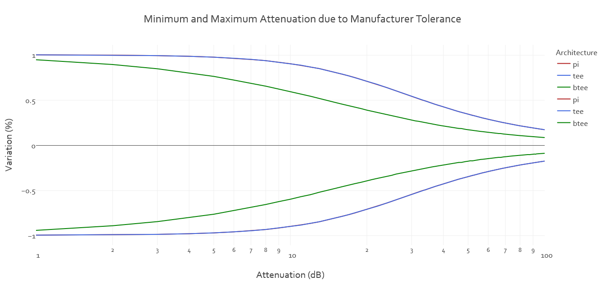
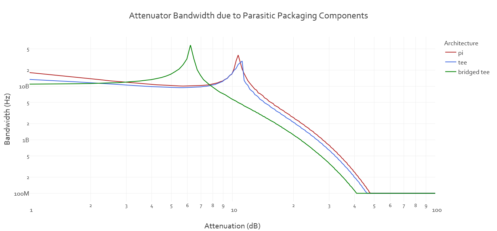
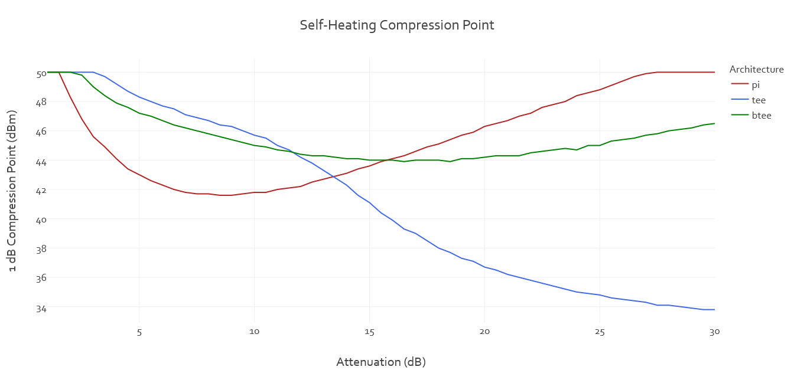
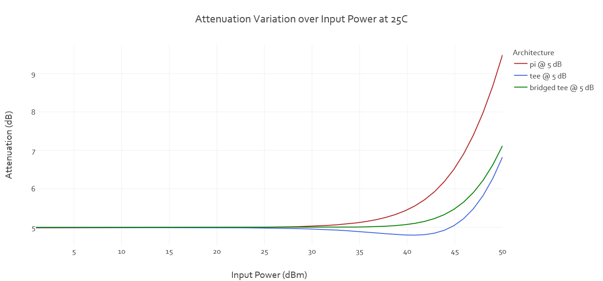
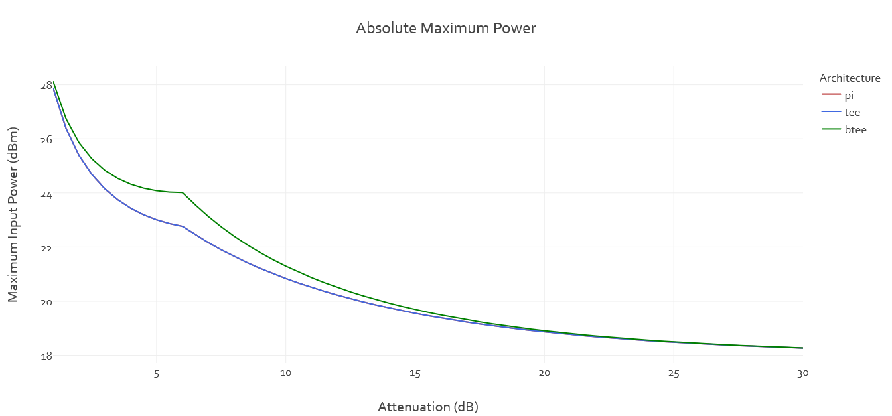

Comparing common attenuator architectures
Attenuators are ubiquitous in the design of any RF circuitry. They are used for output power leveling, improving broadband matching, and preventing damaging power levels. With such a strong presence in the world of radio frequency electronics it is surprising that not a lot of thought is put into selecting an architecture. Many times, I have seen attenuators selected simply because that is how it has been done in previous designs.
This blog attempts to develop a list of differences among the three most common architectures so that one may make a more informed selection.
In the classroom it is often implicitly assumed that a resistor does not vary in value – a 5 Ω resistor is always 5 Ω and never changes. While this aids in tackling new topics, it is not practical. Manufacturers give their resistors a tolerance: a percentage value that defines the range of resistance the manufacturer can guarantee based on process variation.
The distribution of resistance values depends greatly on the process and selection of the resistor. For the purpose of this article, we will assume the distribution is Gaussian with the tolerance at 6σ and the mean is the list resistance.
Process variation is not the only factor effecting the value of a given resistor. Some factors include ambient temperature; ambient pressure; vibration profile of the surface on which it is mounted; self-heating; age of the resistor, and quality of the solder joint.
For the most part ambient pressure is ignored since it is quite often that the product being designed is intended for operation in a habitable area. Vibration effects are mostly covered by adding fasteners and board mounts which increase resonant frequency to prevent damaging levels of surface vibration.
In the classroom it is often assumed that a resistor has a defined, unchanging value. While this aids in learning new topics it is not practical. In a real system there are many factors that will cause a component to change value. The first is a manufacturer’s ability to reproduce the value due to variations in their processes. The variation in a manufacturer’s process will cause their product to be within a predetermined acceptable range of values known as the manufacturer’s tolerance.
In many cases the actual value may not be of much concern such that higher tolerance components are deemed acceptable for one reason or another. However, in precision applications it is important to understand and minimize these variations.
But the question now is how do the determine the resulting effects these variation have on the attenuator at large?
Figure 1: Attenuation Variation of Different Architectures Using 1% Resistors
The plot in Figure 1 shows that for low nominal attenuation values (< 10 dB) the tolerance for the attenuation in the pi and tee architectures remains constant. For high values of attenuation (> 10 dB) the attenuation tolerance decreases.
The graph shows that the tee and pi architectures have identical plots starting at 1% attenuation variation (using 1% resistors) while the bridged tee architecture decreases in attenuation variation for increasing values of nominal attenuation starting at under 1% tolerance.
Figure 2: Attenuation Variation of Different Architectures Using 1% Resistors
From the figure it is quite difficult to see the slope on the lines.
Typically, resistors are not considered frequency-dependent since in the ideal case they have no time-dependent behavior. However, a resistor's bandwidth arises from the parasitic components of its packaging, and PCB pads. There is a small amount of lead inductance and end-to-end capacitance (see Figure 2). The parasitic components can be modeled as a series inductor and parallel capacitor. This first order approximation is acceptable for the use of this article.
From the document created by Vishay the parasitic components take on the following values for given their flip-chip packages and one wrap lead [1].

Figure 3: Model of Resistor - Taken from Vishay High-Frequency Resistor Document [1]
It is at this point we state that the effects from the mounting fixture and pcb material are assumed to be negligible. This is of course untrue but because LC and CG depend on the pad geometry it is impossible to say what they will be without EM simulation.
The following plot is generated using python. The impedance of each resistor in the attenuator is calculated individually at the frequency of interest. Then using the ABCD parameters of the different architecures, the attenuation is calculated. Using these two steps: finding the impedance of the resistors, and calculating the resulting attenuation, the frequency is swept from 100 MHz to 1 THz until the attenuation deviates by more than 0.1 dB in either direction.
Figure 4: 0.1 dB Bandwidth of the Standard Attenuator Architectures
The graph in Figure 3 assumes the use of Vishay's 0402 flip-chip package parasitics. It shows that the order of greatest to smallest bandwidth is consistent over the majority of the attenuation values. It is interesting to see that for intermediate values of attenuation (ranging from 3 dB to about 8 dB) the bridged-tee attenuator actually has the highest bandwidth.
To get an idea of the effects that pad capacitave has on the bandwidth of an attenuator the TEE and PI architectures were modeled in Sonnet using the recommended pad geometry from Vishay's 0402 wrap lead. The 3D model of the two architecture are shown in Figure 5 below.

Figure 5: EM Simulation comparing PI and TEE attenuator architectures
Sonnet Lite only allows simulating with 3 ideal components so the bridged-tee attenuator was left out of the simulation.
Figure 6: EM Simulation comparing PI and TEE attenuator architectures
Figure 6 shows that the parasitics from the mounting of the 0402 components has a large effect on the bandwidth of the attenuators. The simulation also agrees on a few fronts: the 0.1 dB bandwidth of the TEE and PI attenuator architectures are very similar with the PI architecture being marginally larger. It is interesting to see that this no longer holds true at the 11 dB attenuation case.
When dealing with high power applications there are two pieces of information that are vital: the absolute maximum power and the 1 dB compression point.
These are found by determining the amount of power that is absorbed by each resistor in the attenuator. The derivation of the power ratio equations for this section are found in Appendix C – Power Distribution.
For the 1 dB compression point, the self-heating effect is used to calculate the point where the attenuation value drops by 1 dB. For the absolute maximum power this is calculated as the minimum power that causes one of the resistors to dissipate more than its rated value.
The ComponentModel.py script has a resistor model that applies the power ratios from Appendix C and the self-heating effects to each individual resistor in the attenuator. This way it is possible to plot the attenuation as it is affected by the combined thermal effects of each resistor. Bear in mind that the traditional temperature coefficient and power de-rating are linear approximations for highly non-linear processes.
Figure 7: 1 dB Compression Point Simulated Using 100 ppm TCR at 85 C
Figure 8: Attenuation Versus Input Power Using 100 ppm TCR at 85 C
The graph in Figure 4 shows that the pi attenuator architecture is affected the most by changes in temperature though the point of compression for all the architectures due to temperature effects is above 34 dBm. This point is above any practical power level that will be applied to low power discrete component attenuator. As you will see in the next section the maximum CW power that can be sustained with any of these architectures is far below 34 dBm.
The method for calculating the absolute maximum power deviates slightly from the self-heating method previously mentioned. The power ratios (from input port to individual resistors) are calculated, then compared. The resistor with the largest power ratio is then selected as it will be dissipating the largest amount of the total dissipated power. The power rating of the resistors (in this case 1/16 W) is divided by this ratio to get the input power level that will cause at least one of the resistors to go beyond its rated value. Toss this in a loop over attenuation and you get the following plots.
Figure 9: Maximum Input Power Before Damaging any one of the Resistors
Figure 9 was produced using a python script following the method provided above. The base assumptions were: 0402 1/16W 1% resistors with 100 ppm TCR. To use this plot for a resistor with a different power rating you will have to convert:
\[ P_{in} = \frac{P_{rated}}{\rho_p} \]
\[ P'_{in} = \frac{P'_{rated}}{\rho_p} \]
\[ P'_{in} = P_{in} \frac{P'_{rated}}{P_{rated}} \]
\[ \Delta P_{in} = 10\times log \left( \frac{P'_{in}}{P_{in}} \right) = 10 \times log \left( P'_{rated} \right) + 12.04 \]
For example, if we want to instead use a set of resistors rated for 0.125 W then we add 3.01 to the maximum input power taken from the graph. This would give us a maximum of 27 dBm for a 6 dB bridged tee attenuator.
\[ \Delta P_{in} = 10 \times log \left( 0.125 \right) + 12.04 = 3.01 \]
| Component | Open | Change | Short |
|---|---|---|---|
| R1 | Change in attenuation and matching | Change in attenuation and matching | Short circuit, no signal flow |
| R2 | Open circuit, no signal flow | Change in attenuation and matching | Change in attenuation and matching |
| R3 | Change in attenuation and matching | Change in attenuation and matching | Short circuit, no signal flow |
| Component | Open | Change | Short |
|---|---|---|---|
| R1 | Open circuit, no signal flow | Change in attenuation and matching | Change in attenuation and matching |
| R2 | Change in attenuation and matching | Change in attenuation and matching | Short circuit, no signal flow |
| R3 | Open circuit, no signal flow | Change in attenuation and matching | Change in attenuation and matching |
| Component | Open | Change | Short |
|---|---|---|---|
| R1 | Change in attenuation and matching | Change in attenuation and matching | Change in attenuation and matching |
| R2 | Change in attenuation and matching | Change in attenuation and matching | Change in attenuation and matching |
| R3 | Change in attenuation and matching | Change in attenuation and matching | Change in attenuation and matching |
| R4 | Change in attenuation and matching | Change in attenuation and matching | No attenuation; change in matching |
Failure rate is the number of units failed over a period of time, and is given by the number of Failures In Time (FIT) which is defined as the number of failures expected over 1 million hours of use. The reciprocal is defined as the Mean Time Between Failures (MTBF). The MTBF gives an indication of the expected number of failed units after 1 million hours of operation.
The failure rate depends on the many factors including time itself making the analysis of failure rate difficult. A natural "bathtub" curve presents itself over the lifetime of any component. This term describes how component failure is most common at the beginning and end of the components life and is least likely in the middle. For the analyses to make any sense we assume that we are operating within the bottom of the bathtub.
Until now we have made no assumption on the resistor style. For this section we will assume the we are using a fixed film chip (as listed in [3]) operating at 50 C, 0.05W, and are stressed by 0.05/0.125 = 0.4. We obtain the failure rate of each resistor using the calculation method shown in [2] by Rohm.
\[ \lambda_P = \lambda_b \times \pi_T \times \pi_P \times \pi_S \times \pi_Q \times \pi_E \times 10^{-6} \] \[ \lambda_P = 0.0037 \times \pi_T \times \pi_P \times \pi_S \times 3 \times 1 \times 10^{-6} \]
The only missing variables at this point are the temperature, loaded power, and stress factors. These factors are selected from the tables shown in [2].
\[ \lambda_P = 0.0037 \times 1.3 \times 0.26 \times 1.1 \times 3 \times 1 \times 10^{-6} = 4.12698 \times 10^{-9} \]
This provides the total failure rate for the resistor. In order to seperate into the possible failures modes of the resistor, the resistor type must be known. Since for this section we are assuming a fixed film chip I will use the distribution in [3].
| Component | Open (50%) | Change (45%) | Short (5%) |
|---|---|---|---|
| R1 | \(2.06 \times 10^{-9}\) | \(1.85 \times 10^{-9}\) | \(0.21 \times 10^{-9}\) |
| R2 | \(2.06 \times 10^{-9}\) | \(1.85 \times 10^{-9}\) | \(0.21 \times 10^{-9}\) |
| R3 | \(2.06 \times 10^{-9}\) | \(1.85 \times 10^{-9}\) | \(0.21 \times 10^{-9}\) |
| Total (Sum) | \(6.18 \times 10^{-9}\) | \(5.55 \times 10^{-9}\) | \(0.63 \times 10^{-9}\) |
| Topology | Pros | Cons |
|---|---|---|
| Pi |
|
|
| Tee |
|
|
| Bridged Tee |
|
|
[1] Frequency Response of Thin Film Chip Resistors
[2] Presumend Failure Rate Based on MIL Std
[3] Resistors Failure Mechanisms and Anomalies
[4] Failure Rate, Reliability, and Probability
[5] High Frequency 70 GHz Thin Film Chip Resistor Datasheet
The following appendices use the definitions,
\[ a = {10}^{\frac{atten}{20}} \]
\[ \alpha = {10}^{-\frac{atten}{10}} = \frac{1}{a^2} \]
\[ S_{21} = \frac{1}{2} \left( A + \frac{B}{Z_0} + C Z_0 + D \right) \]
\[ atten = -20\times {log}_{10} \left( S_{21} \right) \]

Figure 8: Resistor Definitions for the PI attenuator
Figure 9: Resistor Definitions for the TEE attenuator
Figure 10: Resistor Definitions for the Bridged TEE attenuator
\[ \begin{aligned} R_1 &= Z_0 \left( \frac{a + 1}{a - 1} \right) \\ R_2 &= Z_0 \left( \frac{a^2 - 1}{2a} \right) \end{aligned} \]
\[ \begin{aligned} R_1 &= Z_0 \left( \frac{a - 1}{a + 1} \right) \\ R_2 &= Z_0 \left( \frac{2a}{a^2 - 1} \right) \end{aligned} \]
\[ \begin{aligned} R_1 &= Z_0 \left( a - 1 \right) \\ R_2 &= Z_0 \\ R_3 &= Z_0 \\ R_4 &= \frac{Z_0}{a - 1} \end{aligned} \]
\[ \begin{bmatrix} A & B \\ C & D \end{bmatrix} = \begin{bmatrix} 1+\frac{R_2}{R_1} & R_2 \\ \frac{1}{R_1} \left( 2+\frac{R_2}{R_1} \right) & 1+\frac{R_2}{R_1} \end{bmatrix} \]
\[ \begin{bmatrix} A & B \\ C & D \end{bmatrix} = \begin{bmatrix} 1+\frac{R_1}{R_2} & R_1 \left( 2+\frac{R_1}{R_2} \right) \\ \frac{1}{R_2} & 1+\frac{R_1}{R_2} \end{bmatrix} \]
\[ \begin{bmatrix} A & B \\ C & D \end{bmatrix} = \begin{bmatrix} 1+\frac{R_1 R_2}{\eta} & R_1 \left( 1-\frac{R_1 R_4}{\eta} \right) \\ \frac{R_1+R_2+R_3}{\eta} & 1+\frac{R_1 R_3}{\eta} \end{bmatrix} \]
\[ \eta = R_4 \left( R_1 + R_2 \right) + R_3 \left( R_2 + R_4 \right) \]
| R1 | R2 | R3 |
|---|---|---|
\( \begin{aligned} P_1 &= \frac{V_1^2}{2R_1} = \frac{2 p_{in} Z_0}{2R_1} \\ P_1 &= p_{in} \left( \frac{Z_0}{R_1} \right) \\ P_1 &= p_{in} \left( \frac{a - 1}{a + 1} \right) \end{aligned} \) |
\( \begin{aligned} P_2 &= \frac{(V_1 - V_2)^2}{2R_2} \\ P_2 &= p_{in} \left( \frac{Z_0}{R_2} \right) \left(1 - \sqrt{\alpha}\right)^2 \\ P_2 &= p_{in} \left[ \frac{2(a - 1)}{a(a + 1)} \right] \end{aligned} \) |
\( \begin{aligned} P_3 &= \frac{V_2^2}{2R_3} = \frac{2 \alpha p_{in} Z_0}{2R_3} \\ P_3 &= p_{in} \left( \frac{\alpha Z_0}{R_3} \right) \\ P_3 &= p_{in} \left[ \frac{a - 1}{a^2(a + 1)} \right] \end{aligned} \) |
| R1 | R2 | R3 |
|---|---|---|
\( \begin{aligned} P_1 &= \frac{I_1^2 R_1}{2} = \frac{2 p_{in} R_1}{2Z_0} \\ P_1 &= p_{in} \left( \frac{R_1}{Z_0} \right) \\ P_1 &= p_{in} \left( \frac{a - 1}{a + 1} \right) \end{aligned} \) |
\( \begin{aligned} P_2 &= \frac{(I_1 - I_2)^2 R_2}{2} \\ P_2 &= p_{in} \left( \frac{R_2}{Z_0} \right) \left(1 - \sqrt{\alpha}\right)^2 \\ P_2 &= p_{in} \left[ \frac{2(a - 1)}{a(a + 1)} \right] \end{aligned} \) |
\( \begin{aligned} P_3 &= \frac{I_2^2 R_3}{2} = \frac{2 \alpha p_{in} R_3}{2Z_0} \\ P_3 &= p_{in} \left( \frac{\alpha R_3}{Z_0} \right) \\ P_3 &= p_{in} \left[ \frac{a - 1}{a^2(a + 1)} \right] \end{aligned} \) |
| R1 | R2 | R3 | R4 |
|---|---|---|---|
\( P_1 = p_{in} \left( \frac{a-1}{a^2} \right) \) |
\( P_2 = p_{in} \left( \frac{a-1}{a} \right)^2 \) |
\( P_3 \approx 0 \) |
\( P_4 = p_{in} \left( \frac{a-1}{a^2} \right) \) |